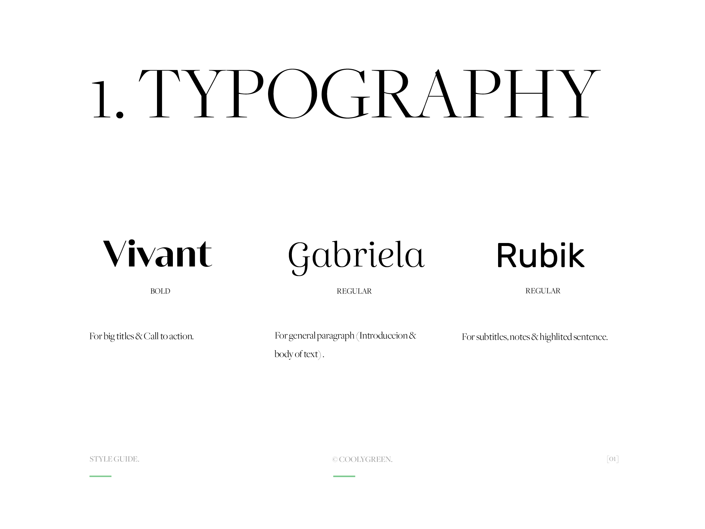
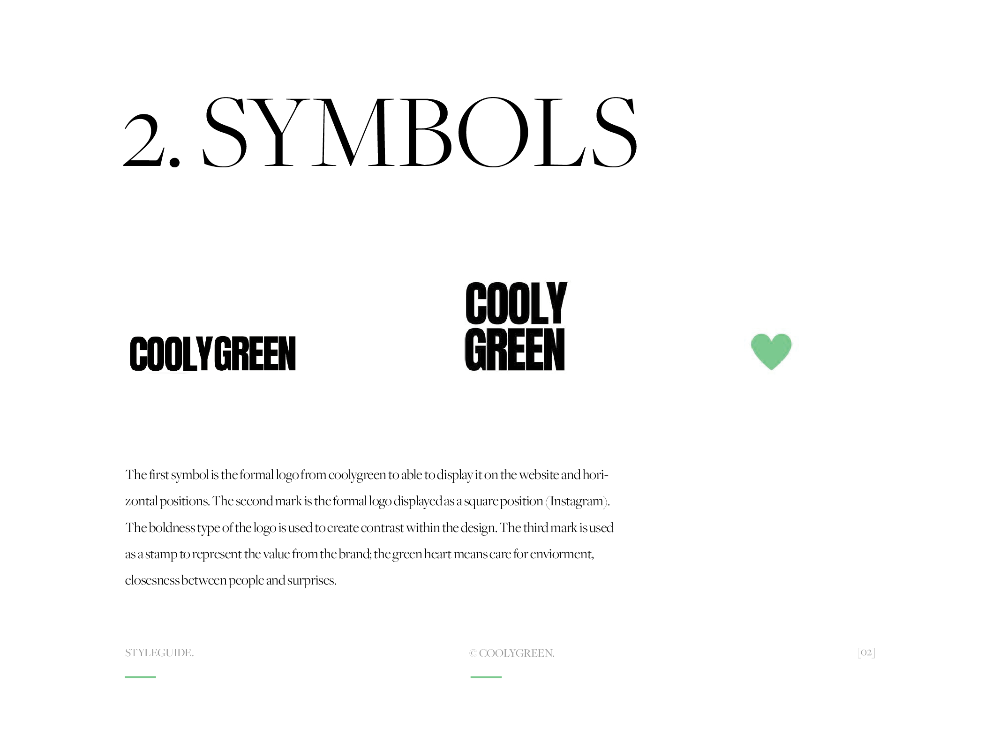
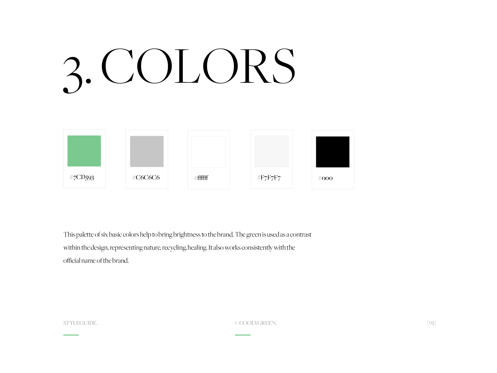
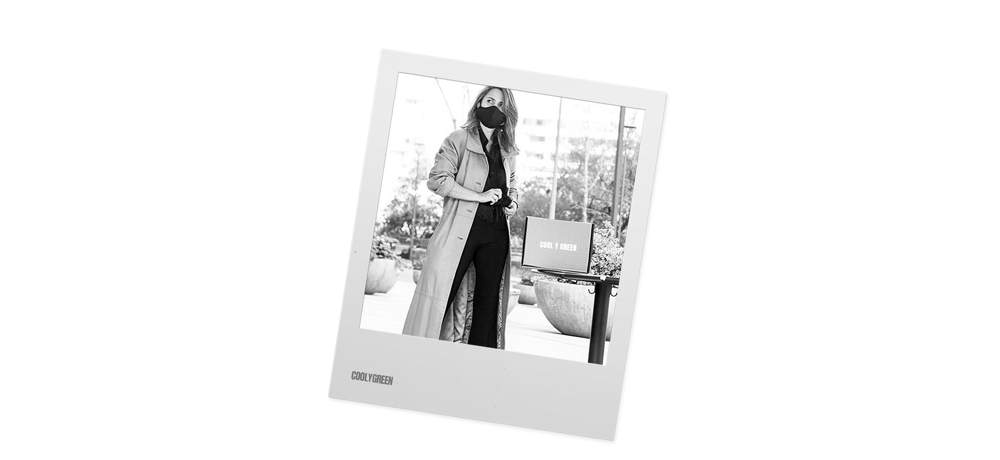
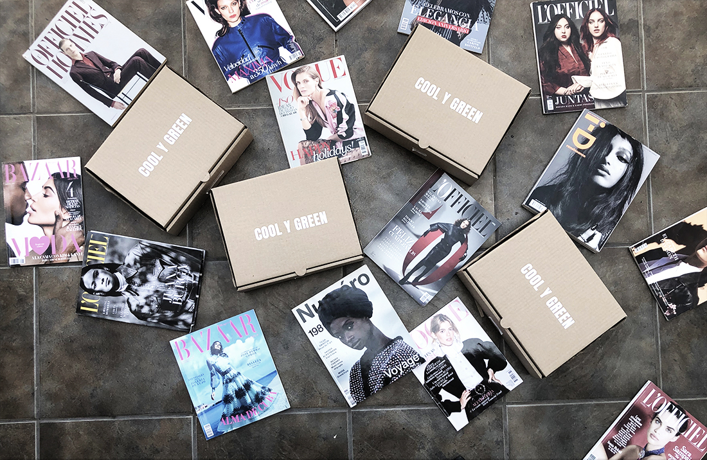

Coolygreen
Online Shopper
— Personal Shopper
Online: Let it
surprise
You

The brief: Giannina Norero — fashion shopper
1. How did the idea came about?
— I was in Europe for 3 years (Spain). I have always liked to use clothes and lacking the money i was frequenting Second hend Shopps. I found an interesting online shopp called loquiero. That was the first approach. I said to myself: why don't i bring this to Chile?
2. What is the need for an actual website?
— Well, i started to hit it on instagram but it became too unpractical the dynamic of sending a set of questions by dm all the time based on introducing what coolygreen was about. Doing this many times with people started to feel unnecessary so i thought it would be great to automatice the system by an online sourvey.
3. What do you expect as a result of getting the website? Do you have a set of goals in mind?
— I'd like to generate more leads. Also to promote the overall image of the brand; something simple and basic to start with and slowly build on it professionally. The goal would be to sell a hundred boxes per month. That would be useful as a major result as well as getting in people's consciousness the idea of buying second-hand clothes.
4. What would be the strategy to generate more leads?
— Probably to make it reachable for people. I talk with the client personally and chat about things in order to make it someting intimate or close enough to build confidence and a sort of connection between us. So in this line i'd like to film myself explaining what the project is about but maybe not right now. In the meantime i'd like to show very simply by images how the idea works out. Probably in the future i'd like to rebrand the whole thing and make it more sophisticated once i can recognize better the niche and reply to it effectively.
5. So what kind of people are you approaching? What is the people that would be interested on using this website?
— There is that kind of woman that doesn't like to buy clothes or do not have time for it. Also there's the one that doesn't have an eye for dressing on different occasions. So there're two right there but i found out that it could be great as a gift from a relative or a boyfriend. There's also the courious people that just want to be surprised by what could be inside the box so they would like to try this at least once and see what happens.
6. What do you think is good design for a website? what do you like and dislike?
— I prefer simple things. I like the blog type of design, i don't like complicated layouts. Something easy to read and understand quickly.
7. Could you define the actual value from coolygreen as a service to the people interested in second-hand clothes?
— I would say the factor of being surprised by something related to your taste in looks. They don't know really what is coming in the box so that generates a certain expectation and i think that is valuable; the dynamic of playing a game. I try to make sure that the clothes are cool and different, wether is possible by what i find in the moment.
8. Would you give us three clear adjectives or sentences describing the brand?
— Being personal. The closeness between shopper and client. Opening your mind and let it surprise you. Recycling clothes. The fashion industry is one of the most polluting industries around, so with this service you can colaborate with the enviorment.
9. Finally, what is the most important thing to achieve on the website?
— I believe the most important thing is the sourvey. I want the website based on the questionnaire for people interested on buying the concept and explain clearly how it works.
On this project the responsiveness of the site was fundamental because big porcentage of the users where most likely looking at the site through their movile phones to complete the survey. They normally came to the site through the instagram page of Coolygreen so the design had to be quite adaptable.
  1. The following page (about) shows the story behind Coolygreen as a brand. G. Norero tells us how she began her journey with second-hand shops in Europe and how this changed her perspective about the bussiness.
2. The front page (home) covers six different categories of style in clothes. It talks about the service, how to order your first look, testimonials and relevant information about the service provided.
3. The survery page (questionnaire) is a set of twenty five questions to describe your personal taste in clothes and style. The majority are required questions but there's a few that could be left in blank if wanted.
Get your stylish look — collaborate with the enviorment
G. Norero was very happy with the end result. She thinks this is a great start for her brand. The fire test was to get new clients answering the survey without previously talk to her and that was exactly what happened within the first days after the website was launched. There is a blog already set on the site but she needs to start writting first before she posts anything. The idea is to feel the website organic with some dynamic content. She got good reviews from people and now she feels a relief about having the survey working by itself instead of having to send it through dm by instagram.
